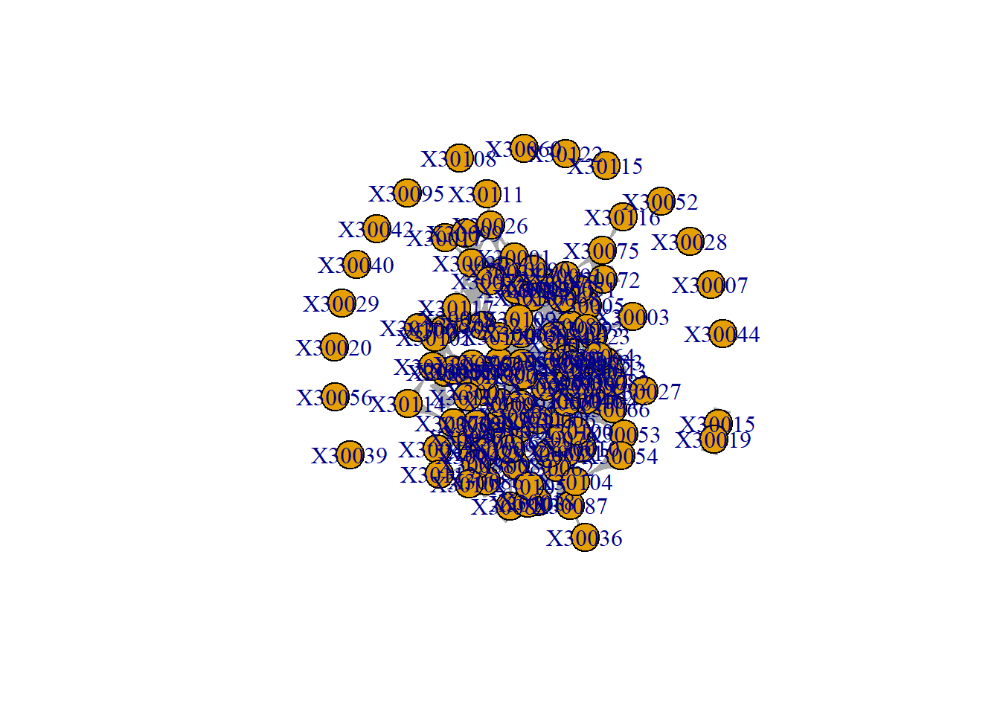
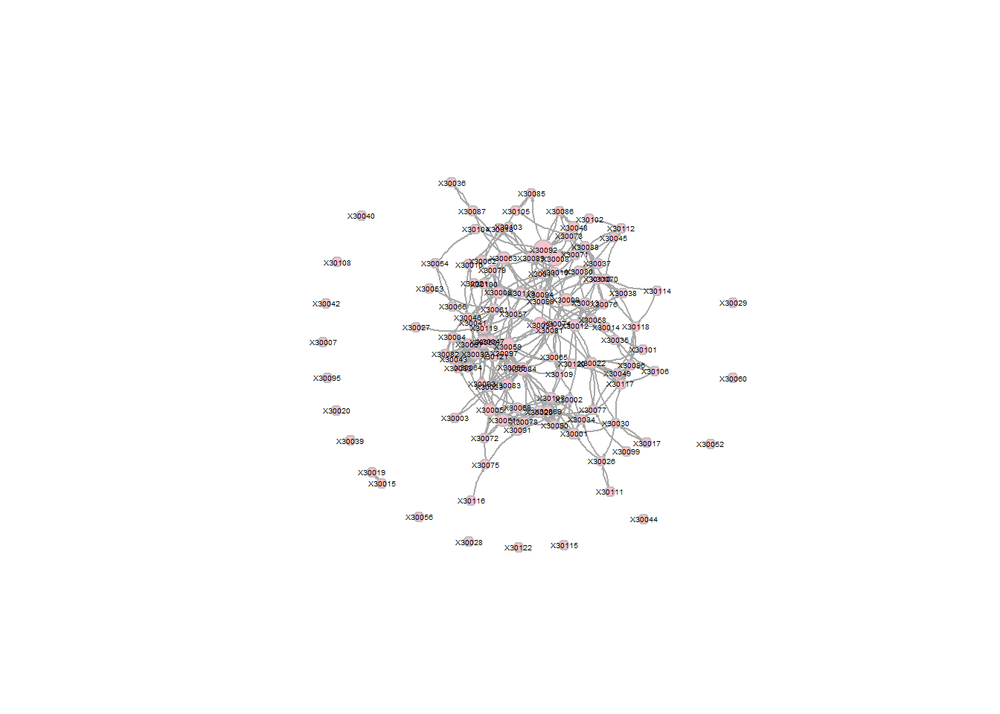
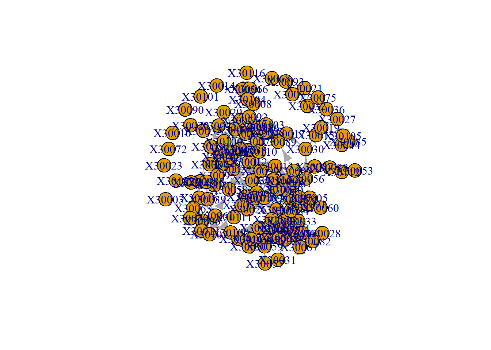
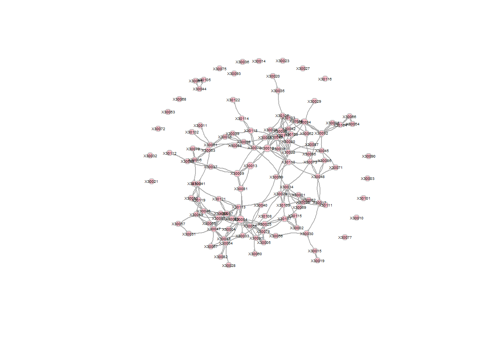

This webpage combines all relevant code from all the weeks that I used for my final assignment, so it is all easily findable in one place, rather than scattered around in all pages for every separate week.
Necessary packages
library(knitr)
library(styler)
library(tidyverse)## ── Attaching core tidyverse packages ──────────────
## ✔ dplyr 1.2.1 ✔ readr 2.2.0
## ✔ forcats 1.0.1 ✔ stringr 1.6.0
## ✔ ggplot2 4.0.3 ✔ tibble 3.3.1
## ✔ lubridate 1.9.5 ✔ tidyr 1.3.2
## ✔ purrr 1.2.2
## ── Conflicts ───────────── tidyverse_conflicts() ──
## ✖ dplyr::filter() masks stats::filter()
## ✖ dplyr::lag() masks stats::lag()
## ℹ Use the conflicted package (<http://conflicted.r-lib.org/>) to force all conflicts to become errorslibrary(installr)##
## Welcome to installr version 0.23.4
##
## More information is available on the installr project website:
## https://github.com/talgalili/installr/
##
## Contact: <tal.galili@gmail.com>
## Suggestions and bug-reports can be submitted at: https://github.com/talgalili/installr/issues
##
## To suppress this message use:
## suppressPackageStartupMessages(library(installr))library(foreign)
library(network)##
## 'network' 1.20.0 (2026-02-06), part of the Statnet Project
## * 'news(package="network")' for changes since last version
## * 'citation("network")' for citation information
## * 'https://statnet.org' for help, support, and other informationlibrary(RSiena)
library(RsienaTwoStep)## Loading required package: foreach
##
## Attaching package: 'foreach'
##
## The following objects are masked from 'package:purrr':
##
## accumulate, whenlibrary(igraph)##
## Attaching package: 'igraph'
##
## The following objects are masked from 'package:network':
##
## %c%, %s%, add.edges, add.vertices, delete.edges, delete.vertices,
## get.edge.attribute, get.edges, get.vertex.attribute, is.bipartite,
## is.directed, list.edge.attributes, list.vertex.attributes,
## set.edge.attribute, set.vertex.attribute
##
## The following objects are masked from 'package:lubridate':
##
## %--%, union
##
## The following objects are masked from 'package:dplyr':
##
## as_data_frame, groups, union
##
## The following objects are masked from 'package:purrr':
##
## compose, simplify
##
## The following object is masked from 'package:tidyr':
##
## crossing
##
## The following object is masked from 'package:tibble':
##
## as_data_frame
##
## The following objects are masked from 'package:stats':
##
## decompose, spectrum
##
## The following object is masked from 'package:base':
##
## unionlibrary(devtools)## Loading required package: usethisLoad in data
load("./data/IndividualCharacteristics.RData")
load("./data/NetworkCharacteristics.RData")# view(hanging[[1]])
hanging_df_t1 <- as.data.frame(hanging[[1]][1])
class(hanging_df_t1)## [1] "data.frame"# view(hanging_df_t1)
strong_netw_t1 <- data.matrix(hanging_df_t1)
strong_netw_t1[strong_netw_t1==9]<-NA
class(strong_netw_t1)## [1] "matrix" "array"# view(strong_netw_t1)
hanging_df_t2 <- as.data.frame(hanging[[1]][2])
class(hanging_df_t2)## [1] "data.frame"# view(hanging_df_t2)
strong_netw_t2 <- data.matrix(hanging_df_t2)
strong_netw_t2[strong_netw_t2==9]<-NA
class(strong_netw_t2)## [1] "matrix" "array"# view(strong_netw_t2)
# Descriptive statistics ## Density
# Wave 1
netw1 <- as.network(strong_netw_t1)
network.density(netw1)## [1] 0.02720386# 0.02720386
# Wave 2
netw2 <- as.network(strong_netw_t2)
network.density(netw2)## [1] 0.01859504# 0.01859504#Wave 1
hangingw1_nona <- na_if(hanging[[1]][[1]], 9)
rowhangingw1 <- rowSums(is.na(hangingw1_nona)) == nrow(hangingw1_nona)
colhangingw1 <- colSums(is.na(hangingw1_nona)) == ncol(hangingw1_nona)
hangingw1_nona[which(rowhangingw1) , ] <- 0
g_strong_t1 <- igraph:: graph_from_adjacency_matrix(hangingw1_nona, mode = "directed")
reciprocity(g_strong_t1, ignore.loops = TRUE, mode = c("default", "ratio"))## [1] 0.4708861# 0.4708861
# Wave 2
hangingw2_nona <- na_if(hanging[[1]][[2]], 9)
rowhangingw2 <- rowSums(is.na(hangingw2_nona)) == nrow(hangingw2_nona)
colhangingw2 <- colSums(is.na(hangingw2_nona)) == ncol(hangingw2_nona)
hangingw2_nona[which(rowhangingw2) , ] <- 0
g_strong_t2 <- igraph:: graph_from_adjacency_matrix(hangingw2_nona, mode = "directed")
reciprocity(g_strong_t2, ignore.loops = TRUE, mode = c("default", "ratio"))## [1] 0.4444444# 0.4444444# Wave 1
dyad_census(g_strong_t1)## $mut
## [1] 93
##
## $asym
## [1] 209
##
## $null
## [1] 6958# Mutual ties: 93
# Asymmetrical ties: 209
# No tie: 6958
# Wave 2
dyad_census(g_strong_t2)## $mut
## [1] 60
##
## $asym
## [1] 150
##
## $null
## [1] 7050# Mutual ties: 60
# Asymmetrical ties: 150
# No tie: 7050# Wave 1
triad_census(g_strong_t1)## [1] 253808 22549 10101 235 243 219 247 254 61 2
## [11] 80 40 54 2 46 39# 003 = 253808
# 012 = 22549
# 102 = 10101
# 021D = 235
# 021U = 243
# 021C = 219
# 111D = 247
# 111U = 254
# 030T = 61
# 030C = 2
# 201 = 80
# 120D = 40
# 120U = 54
# 120C = 2
# 210 = 46
# 300 = 39
# Wave 2
triad_census(g_strong_t2)## [1] 263853 16659 6713 133 125 123 88 132 30 0
## [11] 46 9 39 2 19 9# 003 = 263853
# 012 = 16659
# 102 = 6713
# 021D = 133
# 021U = 125
# 021C = 123
# 111D = 88
# 111U = 132
# 030T = 30
# 030C = 0
# 201 = 46
# 120D = 9
# 120U = 39
# 120C = 2
# 210 = 19
# 300 = 9# Wave 1
transitivity(g_strong_t1)## [1] 0.3641791# 0.3641791
# Wave 2
transitivity(g_strong_t2)## [1] 0.3336766# 0.3336766# Wave 1
mean((ego_size(g_strong_t1, order = 2, mode = "out") - 1)/vcount(g_strong_t1))## [1] 0.07820504# 0.07820504
# Wave 2
mean((ego_size(g_strong_t2, order = 2, mode = "out") - 1)/vcount(g_strong_t2))## [1] 0.0458302# 0.0458302To be calculated when I get my dependent variable of interest :)
Create an igraph object
copy_strong_netw_t1 <- strong_netw_t1
copy_strong_netw_t1[is.na(copy_strong_netw_t1)] <- 0
g_strong_t1 <- igraph:: graph_from_adjacency_matrix(copy_strong_netw_t1, mode = "directed")
plot(g_strong_t1)
pretty_graph_t1 <- simplify(g_strong_t1)
V(pretty_graph_t1)$size = betweenness(pretty_graph_t1, normalized = T, directed = T) * 250 + 50
plot(pretty_graph_t1,
vertex.color = "pink",
vertex.frame.color = "gray",
vertex.label.color = "black",
vertex.label.family = "Helvetica",
vertex.label.cex = 0.3,
vertex.label.dist = 0.5,
edge.curved = 0.2,
edge.arrow.size = 0.075,
margin = 0.01,
rescale = FALSE, ylim = c(-10,10))## Warning in text.default(x0, y0, labels = lbl, col = col, family = fam, font =
## fnt, : font family not found in Windows font database
Create an igraph object
copy_strong_netw_t2 <- strong_netw_t2
copy_strong_netw_t2[is.na(copy_strong_netw_t2)] <- 0
g_strong_t2 <- igraph:: graph_from_adjacency_matrix(copy_strong_netw_t2, mode = "directed")
plot(g_strong_t2)
pretty_graph_t2 <- simplify(g_strong_t2)
V(pretty_graph_t2)$size = betweenness(pretty_graph_t2, normalized = T, directed = T) * 250 + 50
plot(pretty_graph_t2,
vertex.color = "pink",
vertex.frame.color = "gray",
vertex.label.color = "black",
vertex.label.family = "Helvetica",
vertex.label.cex = 0.3,
vertex.label.dist = 0.5,
edge.curved = 0.2,
edge.arrow.size = 0.075,
margin = 0.01,
rescale = FALSE, ylim = c(-9,9))## Warning in text.default(x0, y0, labels = lbl, col = col, family = fam, font =
## fnt, : font family not found in Windows font database
### Node colours based on civil service attitudes